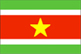
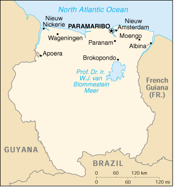

|
Suriname |  |
| Introduction Geography People Government Economy Communications Transportation Military Transnational Issues | ||
|  | ||
| Suriname | Introduction | Top of Page |
| Background: | Independence from the Netherlands was granted in 1975. Five years later the civilian government was replaced by a military regime that soon declared a socialist republic. It continued to rule through a succession of nominally civilian administrations until 1987, when international pressure finally brought about a democratic election. In 1989, the military overthrew the civilian government, but a democratically elected government returned to power in 1991. |
| Suriname | Geography | Top of Page |
| Location: | Northern South America, bordering the North Atlantic Ocean, between French Guiana and Guyana |
| Geographic coordinates: | 4 00 N, 56 00 W |
| Map references: | South America |
| Area: |
total:
163,270 sq km
land: 161,470 sq km water: 1,800 sq km |
| Area - comparative: | slightly larger than Georgia |
| Land boundaries: |
total:
1,707 km
border countries: Brazil 597 km, French Guiana 510 km, Guyana 600 km |
| Coastline: | 386 km |
| Maritime claims: |
exclusive economic zone:
200 NM
territorial sea: 12 NM |
| Climate: | tropical; moderated by trade winds |
| Terrain: | mostly rolling hills; narrow coastal plain with swamps |
| Elevation extremes: |
lowest point:
unnamed location in the coastal plain -2 m
highest point: Juliana Top 1,230 m |
| Natural resources: | timber, hydropower, fish, kaolin, shrimp, bauxite, gold, and small amounts of nickel, copper, platinum, iron ore |
| Land use: |
arable land:
0%
permanent crops: 0% permanent pastures: 0% forests and woodland: 96% other: 4% (1993 est.) note: there are 94,927 hectares of arable land, 7,195 hectares of permanent crops, and 15,000 hectares of permanent pastures |
| Irrigated land: | 600 sq km (1993 est.) |
| Natural hazards: | NA |
| Environment - current issues: | deforestation as timber is cut for export; pollution of inland waterways by small-scale mining activities |
| Environment - international agreements: |
party to:
Biodiversity, Climate Change, Desertification, Endangered Species, Law of the Sea, Marine Dumping, Nuclear Test Ban, Ozone Layer Protection, Ship Pollution, Tropical Timber 94, Wetlands
signed, but not ratified: none of the selected agreements |
| Geography - note: | mostly tropical rain forest; great diversity of flora and fauna that, for the most part, is increasingly threatened by new development; relatively small population, most of which lives along the coast |
| Suriname | People | Top of Page |
| Population: | 433,998 (July 2001 est.) |
| Age structure: |
0-14 years:
31.62% (male 70,314; female 66,924)
15-64 years: 62.71% (male 138,969; female 133,193) 65 years and over: 5.67% (male 11,194; female 13,404) (2001 est.) |
| Population growth rate: | 0.6% (2001 est.) |
| Birth rate: | 20.53 births/1,000 population (2001 est.) |
| Death rate: | 5.68 deaths/1,000 population (2001 est.) |
| Net migration rate: | -8.87 migrant(s)/1,000 population (2001 est.) |
| Sex ratio: |
at birth:
1.05 male(s)/female
under 15 years: 1.05 male(s)/female 15-64 years: 1.04 male(s)/female 65 years and over: 0.84 male(s)/female total population: 1.03 male(s)/female (2001 est.) |
| Infant mortality rate: | 24.27 deaths/1,000 live births (2001 est.) |
| Life expectancy at birth: |
total population:
71.63 years
male: 68.97 years female: 74.42 years (2001 est.) |
| Total fertility rate: | 2.47 children born/woman (2001 est.) |
| HIV/AIDS - adult prevalence rate: | 1.26% (1999 est.) |
| HIV/AIDS - people living with HIV/AIDS: | 3,000 (1999 est.) |
| HIV/AIDS - deaths: | 210 (1999 est.) |
| Nationality: |
noun:
Surinamer(s)
adjective: Surinamese |
| Ethnic groups: | Hindustani (also known locally as "East Indians"; their ancestors emigrated from northern India in the latter part of the 19th century) 37%, Creole (mixed white and black) 31%, Javanese 15%, "Maroons" (their African ancestors were brought to the country in the 17th and 18th centuries as slaves and escaped to the interior) 10%, Amerindian 2%, Chinese 2%, white 1%, other 2% |
| Religions: | Hindu 27.4%, Muslim 19.6%, Roman Catholic 22.8%, Protestant 25.2% (predominantly Moravian), indigenous beliefs 5% |
| Languages: | Dutch (official), English (widely spoken), Sranang Tongo (Surinamese, sometimes called Taki-Taki, is native language of Creoles and much of the younger population and is lingua franca among others), Hindustani (a dialect of Hindi), Javanese |
| Literacy: |
definition:
age 15 and over can read and write
total population: 93% male: 95% female: 91% (1995 est.) |
| Suriname | Government | Top of Page |
| Country name: |
conventional long form:
Republic of Suriname
conventional short form: Suriname local long form: Republiek Suriname local short form: Suriname former: Netherlands Guiana, Dutch Guiana |
| Government type: | constitutional democracy |
| Capital: | Paramaribo |
| Administrative divisions: | 10 districts (distrikten, singular - distrikt); Brokopondo, Commewijne, Coronie, Marowijne, Nickerie, Para, Paramaribo, Saramacca, Sipaliwini, Wanica |
| Independence: | 25 November 1975 (from Netherlands) |
| National holiday: | Independence Day, 25 November (1975) |
| Constitution: | ratified 30 September 1987 |
| Legal system: | based on Dutch legal system incorporating French penal theory |
| Suffrage: | 18 years of age; universal |
| Executive branch: |
chief of state:
President Runaldo Ronald VENETIAAN (since 12 August 2000); Vice President Jules Rattankoemar AJODHIA (since 12 August 2000); note - the president is both the chief of state and head of government
head of government: President Runaldo Ronald VENETIAAN (since 12 August 2000); Vice President Jules Rattankoemar AJODHIA (since 12 August 2000); note - the president is both the chief of state and head of government cabinet: Cabinet of Ministers appointed by the president from among the members of the National Assembly elections: president and vice president elected by the National Assembly or, if no presidential or vice presidential candidate receives a constitutional majority vote in the National Assembly after two votes, by the larger People's Assembly (869 representatives from the national, local, and regional councils), for five-year terms; election last held 6 May 2000 (next to be held NA May 2005) note: widespread demonstrations during the summer of 1999 led to the calling of elections a year early election results: Runaldo Ronald VENETIAAN elected president; percent of legislative vote - 72.5; National Assembly elected the president - Runaldo Ronald VENETIAAN (New Front) 37 votes, Rashied DOEKHIE (NDP) 10 votes |
| Legislative branch: |
unicameral National Assembly or Nationale Assemblee (51 seats; members are elected by popular vote to serve five-year terms)
elections: last held 5 May 2000 (next to be held NA May 2005) election results: percent of vote by party - NA%; seats by party - NF 33, MC 10, DNP 2000 3, DA '91 2, PVF 2, PALU 1 note: widespread demonstrations during the summer of 1999 led to the calling of elections a year early |
| Judicial branch: | Court of Justice (justices are nominated for life) |
| Political parties and leaders: | Democratic Alternative '91 or DA '91 (a coalition of the Alternative Forum or AF and Party for Brotherhood and Unity in Politics or BEP, formed in January 1991) [S. RAMKHELAWAN]; Democratic National Platform 2000 or DNP 2000 (coalition of two parties, Democratic Party and Democrats of the 21st Century) [Jules WIJDENBOSCH]; Independent Progressive Democratic Alternative or OPDA [Joginder RAMKHILAWAN]; Millennium Combination or MC (a coalition of three parties, Democratic Alternative, Party for National Unity and Solidarity, and National Democratic Party) [leader NA]; National Democratic Party or NDP [Desire BOUTERSE]; Naya Kadam or NK [leader NA]; Party for Renewal and Democracy or BVD [Tjan GOBARDHAN]; Party of National Unity and Solidarity or KTPI [Willy SOEMITA]; Pertjaja Luhur [Paul SOMOHARDJO]; Progressive Workers' and Farm Laborers' Union or PALU [Ir Iwan KROLIS]; The New Front or NF (a coalition of four parties Suriname National Party or NPS, Progressive Reform Party or VHP, Suriname Labor Party or SPA, and Pertjaja Luhur) [Ronald R. VENETIAAN]; The Progressive Development Alliance (a combination of three parties, Renewed Progressive Party or HPP, Party of the Federation of Land Workers or PVF, and Suriname Progressive People's Party or PSV) [Harry KISOENSINGH] |
| Political pressure groups and leaders: | General Liberation and Development Party or ABOP [Ronnie BRUNSWIJK]; Mandela Bushnegro Liberation Movement [Leendert ADAMS]; Tucayana Amazonica [Alex JUBITANA, Thomas SABAJO]; Union for Liberation and Democracy [Kofi AFONGPONG] |
| International organization participation: | ACP, Caricom, ECLAC, FAO, G-77, IADB, IBRD, ICAO, ICFTU, ICRM, IDB, IFAD, IHO, ILO, IMF, IMO, Intelsat (nonsignatory user), Interpol, IOC, ITU, LAES, NAM, OAS, OIC, OPANAL, OPCW, PCA, UN, UNCTAD, UNESCO, UNIDO, UPU, WCL, WHO, WIPO, WMO, WTrO |
| Diplomatic representation in the US: |
chief of mission:
Ambassador (vacant)
chancery: Suite 460, 4301 Connecticut Avenue NW, Washington, DC 20008 telephone: [1] (202) 244-7488 FAX: [1] (202) 244-5878 consulate(s) general: Miami |
| Diplomatic representation from the US: |
chief of mission:
Ambassador Daniel A. JOHNSON
embassy: Dr. Sophie Redmondstraat 129, Paramaribo mailing address: Department of State, 3390 Paramaribo Place, Washington, DC, 20521-3390 telephone: [597] 472900 FAX: [597] 420800 |
| Flag description: | five horizontal bands of green (top, double width), white, red (quadruple width), white, and green (double width); there is a large, yellow, five-pointed star centered in the red band |
| Suriname | Economy | Top of Page |
| Economy - overview: | The economy is dominated by the bauxite industry, which accounts for more than 15% of GDP and 70% of export earnings. After assuming power in the fall of 1996, the WIJDENBOSCH government ended the structural adjustment program of the previous government, claiming it was unfair to the poorer elements of society. Tax revenues fell as old taxes lapsed and the government failed to implement new tax alternatives. By the end of 1997, the allocation of new Dutch development funds was frozen as Surinamese Government relations with the Netherlands deteriorated. Economic growth slowed in 1998, with decline in the mining, construction, and utility sectors. Rampant government expenditures, poor tax collection, a bloated civil service, and reduced foreign aid in 1999 contributed to the fiscal deficit, estimated at 11% of GDP. The government sought to cover this deficit through monetary expansion, which led to a dramatic increase in inflation and exchange rate depreciation. Suriname's economic prospects for the medium term will depend on renewed commitment to responsible monetary and fiscal policies and to the introduction of structural reforms to liberalize markets and promote competition. The new government of Ronald VENETIAAN has begun an austerity program, raised taxes, and attempted to control spending. the exchange rate has responded by stabilizing. The Dutch Government has restarted the aid flow, which will allow Suriname to access international development financing. |
| GDP: | purchasing power parity - $1.48 billion (1999 est.) |
| GDP - real growth rate: | -1% (1999 est.) |
| GDP - per capita: | purchasing power parity - $3,400 (1999 est.) |
| GDP - composition by sector: |
agriculture:
13%
industry: 22% services: 65% (1998 est.) |
| Population below poverty line: | NA% |
| Household income or consumption by percentage share: |
lowest 10%:
NA%
highest 10%: NA% |
| Inflation rate (consumer prices): | 78% (2000 est.) |
| Labor force: | 100,000 |
| Labor force - by occupation: | agriculture NA%, industry NA%, services NA% |
| Unemployment rate: | 20% (1997) |
| Budget: |
revenues:
$393 million
expenditures: $403 million, including capital expenditures of $34 million (1997 est.) |
| Industries: | bauxite and gold mining, alumina production, lumbering, food processing, fishing |
| Industrial production growth rate: | 6.5% (1994 est.) |
| Electricity - production: | 1.937 billion kWh (1999) |
| Electricity - production by source: |
fossil fuel:
25.92%
hydro: 74.08% nuclear: 0% other: 0% (1999) |
| Electricity - consumption: | 1.801 billion kWh (1999) |
| Electricity - exports: | 0 kWh (1999) |
| Electricity - imports: | 0 kWh (1999) |
| Agriculture - products: | paddy rice, bananas, palm kernels, coconuts, plantains, peanuts; beef, chickens; forest products; shrimp |
| Exports: | $443 million (f.o.b., 1999) |
| Exports - commodities: | alumina, crude oil, lumber, shrimp and fish, rice, bananas |
| Exports - partners: | US 23%, Norway 19%, Netherlands 11%, France, Japan, UK (1999) |
| Imports: | $525 million (f.o.b., 1999) |
| Imports - commodities: | capital equipment, petroleum, foodstuffs, cotton, consumer goods |
| Imports - partners: | US 35%, Netherlands 15%, Trinidad and Tobago 12%, Japan, UK, Brazil (1999) |
| Debt - external: | $512 million (2000 est.) |
| Economic aid - recipient: | Netherlands provided $37 million for project and program assistance, European Development Fund $4 million, Belgium $2 million (1998) |
| Currency: | Surinamese guilder (SRG) |
| Currency code: | SRG |
| Exchange rates: |
Surinamese guilders per US dollar - 2,178.50 (December 2000), 987.50 (December 1999), 401.00 (December 1998), 401.00 (December 1997), 401.26 (December 1996)
note: beginning in July 1994, the central bank midpoint exchange rate was unified and became market determined; during 1998, the exchange rate splintered into four distinct rates; in January 1999 the government floated the guilder, but subsequently fixed it when the black-market rate plunged; the government currently allows trading within a band of SRG 500 around the official rate |
| Fiscal year: | calendar year |
| Suriname | Communications | Top of Page |
| Telephones - main lines in use: | 64,000 (1997) |
| Telephones - mobile cellular: | 4,090 (1997) |
| Telephone system: |
general assessment:
international facilities are good
domestic: microwave radio relay network international: satellite earth stations - 2 Intelsat (Atlantic Ocean) |
| Radio broadcast stations: | AM 4, FM 13, shortwave 1 (1998) |
| Radios: | 300,000 (1997) |
| Television broadcast stations: | 3 (plus seven repeaters) (2000) |
| Televisions: | 63,000 (1997) |
| Internet country code: | .sr |
| Internet Service Providers (ISPs): | 2 (2000) |
| Internet users: | 10,000 (2000) |
| Suriname | Transportation | Top of Page |
| Railways: |
total:
166 km (single track)
standard gauge: 80 km 1.435-m gauge narrow gauge: 86 km 1.000-m gauge note: Suriname railroads are not in operation (2000) |
| Highways: |
total:
4,530 km
paved: 1,178 km unpaved: 3,352 km (1996) |
| Waterways: |
1,200 km
note: most important means of transport; oceangoing vessels with drafts ranging up to 7 m can navigate many of the principal waterways |
| Ports and harbors: | Albina, Moengo, New Nickerie, Paramaribo, Paranam, Wageningen |
| Merchant marine: |
total:
3 ships (1,000 GRT or over) totaling 3,432 GRT/4,525 DWT
ships by type: cargo 1, container 1, petroleum tanker 1 (2000 est.) |
| Airports: | 46 (2000 est.) |
| Airports - with paved runways: |
total:
5
over 3,047 m: 1 914 to 1,523 m: 1 under 914 m: 3 (2000 est.) |
| Airports - with unpaved runways: |
total:
41
1,524 to 2,437 m: 1 914 to 1,523 m: 5 under 914 m: 35 (2000 est.) |
| Suriname | Military | Top of Page |
| Military branches: | National Army (includes small Navy and Air Force elements), Civil Police |
| Military manpower - availability: | males age 15-49: 121,656 (2001 est.) |
| Military manpower - fit for military service: | males age 15-49: 71,344 (2001 est.) |
| Military expenditures - dollar figure: | $8.5 million (FY97 est.) |
| Military expenditures - percent of GDP: | 1.6% (FY97 est.) |
| Suriname | Transnational Issues | Top of Page |
| Disputes - international: | area disputed by French Guiana between Riviere Litani and Riviere Marouini (both headwaters of the Lawa); area disputed by Guyana between New (Upper Courantyne) and Courantyne/Koetari [Kutari] rivers (all headwaters of the Courantyne) |
| Illicit drugs: | transshipment point for South American drugs destined for Europe and Brazil; transshipment point for arms-for-drugs dealing |
{kind=link}
{kind=link}